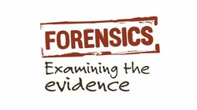
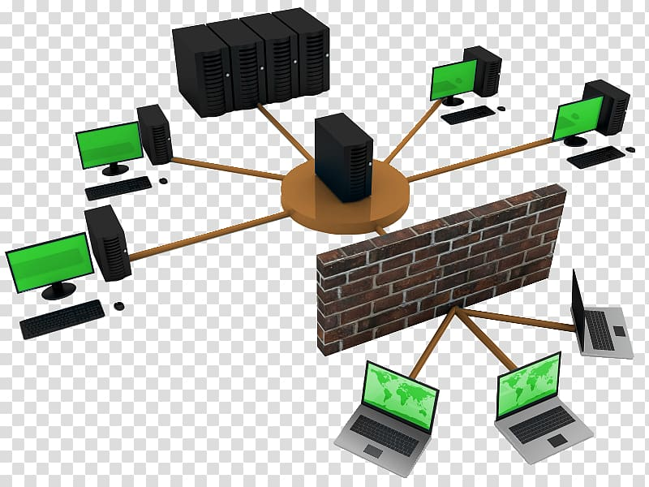

--- WELCOME TO ADMIN_TOOLS ---
Below you will find the descriptions of Operating Systems, and other pages related to Administrative tools. I have created
a Comments area for you administrators to leave ideas, and or, tools you have also used. So, please feel free to leave
a comment with a link to your favorite tool, or any ideas to improve this site, and again, WELCOME to ADMIN_TOOLS
--- WINDOWS ---
Windows, Tools can help you with everyday tasks, you will find that not all the
tools are the same. Yes, the look a lot alike but not every tool works the same
either. As an Administrator or, Technician you will
try many tools that either will work for you and alot that won't. I have put
together links that that may or may not help you along you IT path.
--- LINUX ---
Linex, tools can help you with everyday tasks, you will find that not
all the tools are the same. Yes, the look a lot alike but not every tool works the same
either. As an Administrator or, Technician you will try many tools that either will work for you
and alot that won't. I have put together links that that may or may not help you along you IT path.
--- SECURITY ---

Security, is one of the most important things to consider when securing a
Web page, Network, Cliant, or Server. Security Tools can make the job easier to identify security
weak spots no matter how small. The following links will lead you to tools that I myself have used
in the past, and I have found them to be very reliable and easy to use.
--- FORENSICS ---

Forensics, tools are the only way to find the things that are not meant to found
by just anybody, with the right Forensics tools at your disposal nothing is hidden, nothing is safe
from prying eyes. So I have added links to the tools that I have Used in the past and still
use to day, when coming accross used hard drives.
>
--- NETWORKING ---

Networking, tools can make the Network Administration process faster, easier. As a
Networks Administrator you will want to use tools that allow you to monitor network traffic, and potential
malware or unusual traffice not common to your network. using the right tools for the right job is one of
the most important things you will do as a Networks Technician. I ahve added hyperlinks to the tools and
sites that I have used along my IT path.
--- DISCLAIMER ---
The links on the following pages will take you to Software that is either Free of charge, or has a Trial period.